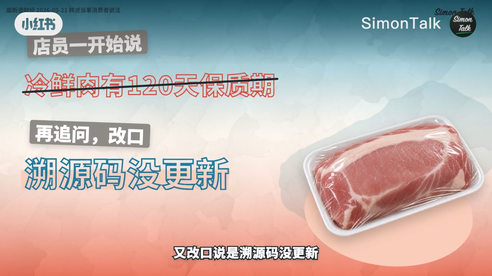
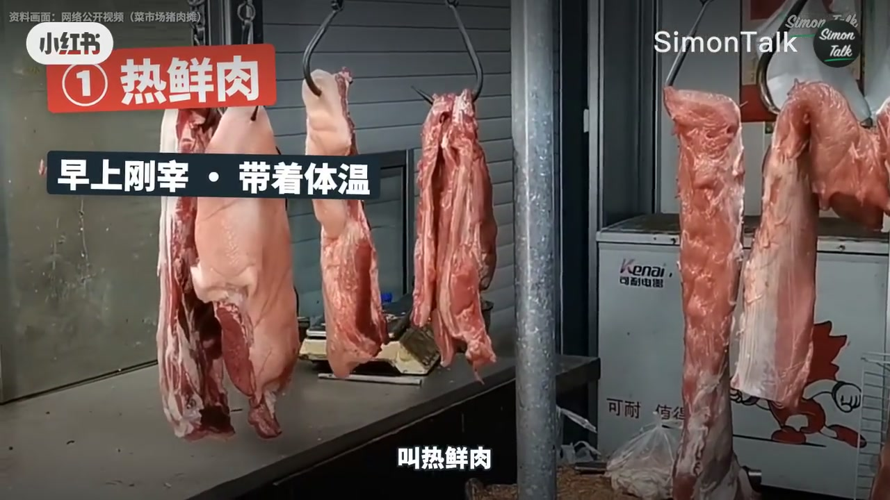
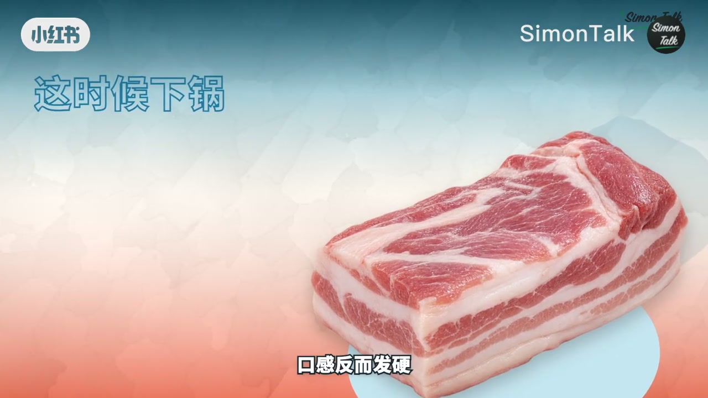
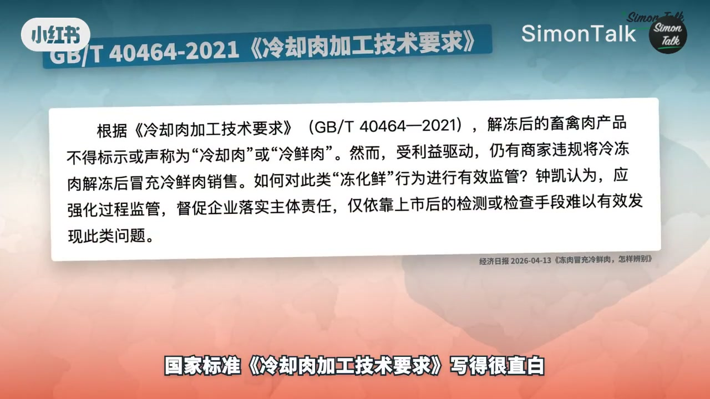
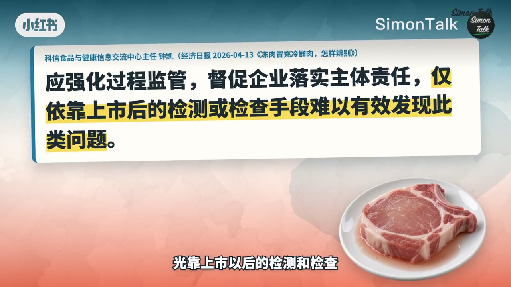

内容要点
SimonTalk 用「坑」叙事讲清楚猪肉三种状态：热鲜（刚宰带体温）、冷鲜/冷却肉（中心0–4℃且贮运始终保持）、冷冻肉（深冻后约-18℃贮存）。新国标《肉与肉制品术语》给冷鲜加了「始终」二字；解冻后再当冷鲜卖（冻化鲜）违规且难靠手感分辨。冷冻肉本身不坑，坑的是冻过还叫冷鲜。
知识结构
热鲜/冷鲜/冷冻：温度路径不同，不是形容词比赛。
新国标强调贮运始终0–4℃；排酸后口感优于僵直期现宰。
解冻肉不得标冷鲜；价差诱惑大，眼看手按很难精准区分。
认字+正确化冻；坑度：冻肉不坑，冻过还叫冷鲜才坑。
买猪肉先问「这一路上中断过没有」——冷鲜贵在冷链不断，不在「看起来红」。
00:00-01:20冷鲜的鲜：不是刚宰，是没冻过
开场给立刻能用的句子：冷鲜的「鲜」，说的不是刚宰，是这一路上没冻过。菜场超市猪肉分三种——热鲜：早上刚宰带着体温上案；冷鲜/冷却肉：宰完进冷却间把中心降到0–4℃；冷冻肉：更低温度冻透再约-18℃贮存。
资料画面用挂着的热鲜肉标注「早上刚宰·带着体温」，把术语钉在可见场景上。


01:20-02:50国标「始终」与排酸：现宰不一定更好吃
温度定义写在国家标准《肉与肉制品术语》里，新版（旁白称9月1日换版）给冷鲜多加「贮运过程始终保持0–4℃」。旧版只强调降到0–4℃不结冰，「始终」成为后面打假的关键钉子。
常见误会是「早上现宰最新鲜最好吃」：刚宰后会进入僵直，一般持续1–3天，这阶段下锅反而发硬。冷鲜在0–4℃熬过这段慢慢回软，也叫排酸肉——贵在冷链不能断，也在口感窗口。


02:50-04:36冻化鲜：差价在标签，风险在过程
冷冻肉营养差别往往不大，红烧也未必吃得出来；问题是冻过、化开、再摆进冷鲜柜还标冷鲜——国标与监管要求写明解冻畜禽肉不得标示为冷却肉/冷鲜肉。行业称「冻化鲜」，吃亏的不只是钱，还有品质下降与微生物风险。
钟凯等观点：普通消费者很难靠按压回弹、血水、颜色精准区分；更要靠标签上的字，并从过程监管。化冻建议提前一晚冷藏慢化，别台面放一下午。坑度总结：冻肉本身不坑，坑的是冻过还叫冷鲜，而且你几乎看不出来。

完整转录（118段）
以下文本由 Whisper medium 模型自动转录，可能存在少量识别误差，已尽可能修正。
今年三月,
一块肉划上一只钟,
从它离开屠宰线那一刻开始算。
Simon Talk,
今天这个坑叫动画仙。
先给一句马上能用的,
冷仙的仙,
说的不是刚宰,
是这一路上没动过。
菜场和超市里的猪肉,
其实分三种。
第一种,
早上刚宰,
还带著体温就上了案板,
叫热仙肉。
它离得最近,
可常温摆著,
温度和营养正好给细菌提供了生长的环境。
第二种,
宰完送进冷却间,
把肉的中心温度降到0-4度,
叫冷却肉,
也就是冷仙肉。
第三种,
放进零下28度以下的冷库,
冻透,
中心低于零下15度,
再在零下18度存著,
叫冷冻肉。
这些温度写在国家标准肉与肉制品术语里,
今年9月1号刚换了新版。
旧版只说把肉的中心降到0-4度,
不结冰。
新版给冷仙肉多加了一句,
在储运过程中,
始终保持在0-4度。
始终这两个字,
今天后面还要用到。
先说一个常见的误会,
早上现宰的最新鲜,
所以最好吃。
猪刚宰完,
肉是软的,
过几个小时就开始变硬,
这叫僵直,
一般要持续1-3天。
这时候下锅,
口感反而发硬。
现宰的肉,
正好赶上它脾气最硬的那几天。
冷仙肉在0-4度里放著,
正好熬过这一段,
慢慢变回柔软又弹性,
所以它也叫排酸肉。
它为什么贵?
一是保质期短,
冷炼一路不能断,
成本高。
冷冻肉便宜,
除了放的酒还有!
还有储备肉帮着平易价格
那冷冻肉是不是就差一截?
科兴食品与
健康信息交流中心主任钟凯说
冷却肉、冷仙肉。
前面说的那个始终,
指的就是这一条。
冻过一次就回不去了。
卖实用农产品的监管办法也要求
销售者要如实标明名称这些信息。
可冷冻肉便宜,
冷仙肉贵,
把前一种化开,
摆成后一种,
中间就是差价。
《经济日报》的报导里
把这种做法叫冻化仙,
吃亏的也不只是钱。
行业报导的提醒是
解冻以后再摆进冷藏柜的肉,
品质会下降,
还可能有微生物滋生的风险。
而价钱上,
它还是一块冷仙肉。
那能不能一眼看出来?
网上流传的办法不少,
按一下看回不回弹,
看河底有没有血水,
看颜色暗不暗。
钟凯的回答很实在,
普通消费者很难精准区分这两种肉。
他还说,
光靠上市以后的检测和检查
也很难发现这种事,
得从过程上管。
所以别急著练手感,
能靠的是字。
教你三步。
,
口感还会再差一截。
化冻最好提前一晚放进冷藏室,
让它慢慢化,
别扔在台面上一放一下午。
回到开头那盒肉,
马上那个日期是系统错了,
还是肉真的冻过,
只能等公开的结论。
但下次站在冷柜前,
你至少知道该问哪一句,
它这一路上中停过没有。
坑度,三个坑。
冻肉本身不坑,
坑的是冻果还叫冷仙,
而且你几乎看不出来。
评论区说说,
你买猪肉认冷仙、
认冷冻,
还是指任早上限宰的